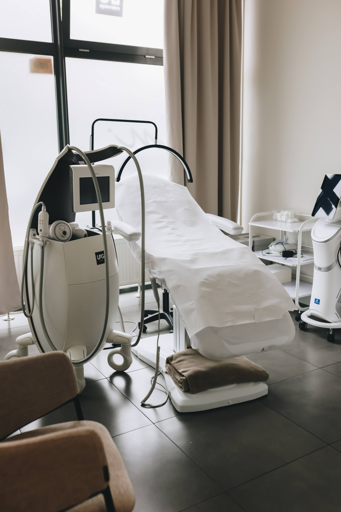

Jesteśmy tu, żeby Twoja skóra i Ty czuli się najlepiej
Kilka słów o nas
Łączymy nowoczesne, medyczne technologie z ciepłą, indywidualną opieką — dla każdej i każdego, kto chce zadbać o swoją skórę.

Historia
Nasza Historia
Początki naszej wspólnej drogi sięgają czasów sprzed 2016 roku — momentu, w którym doświadczenie Krzysztofa w budowaniu marek spotkało się z kosmetologiczną pasją i medyczną precyzją Eweliny.
W 2016 roku otworzyliśmy w Płocku oddział ogólnopolskiej sieci, przez kolejne lata budując silny, zaufany zespół i zdobywając bezcenne doświadczenie w pracy z zaawansowanymi technologiami hi-tech.
W styczniu 2022 roku nadszedł czas na pełną niezależność. Powstał INSTYTUTem.™ — miejsce bez korporacyjnych kompromisów, tworzone całkowicie na własnych zasadach. Przestrzeń, w której medyczny rygor technologiczny łączy się z butikowym komfortem, intymnością i autentyczną troską o każdego podopiecznego.
W nazwie INSTYTUTem.™ zamknęliśmy dwie nierozerwalne wartości: rygor naukowy oraz osobistą odpowiedzialność.
INSTYTUT to przestrzeń zaawansowanej kosmetologii hi-tech, certyfikowanych urządzeń i wiedzy, która nie uznaje przypadkowości ani dróg na skróty.
em. to fonetyczny zapis inicjałów Eweliny Majchrzak — założycielki, głównego kosmetologa i osoby, która firmuje swoim autorytetem każdy wdrożony protokół zabiegowy.
To nasza bezkompromisowa obietnica: instytut medycznego standardu, za którym stoi konkretny człowiek, imię i nazwisko oraz pełna odpowiedzialność za Twoją skórę.
Nie wierzymy w uniwersalne schematy ani w chwilowe mody. W INSTYTUTem.™ jakość opiera się na trzech filarach:
- Złoty standard medyczny: Pracujemy wyłącznie na oryginalnych urządzeniach z certyfikacją medyczną (w tym medycznym laserem diodowym LightSheer® DUET™ z certyfikatem FDA oraz oryginalnej Endermologii LPG® Alliance). Żadnych kosmetycznych zamienników.
- Autorskie protokoły komfortu: Zdejmujemy z zabiegów lęk przed bólem. Wdrażamy autorskie procedury chłodzenia tkanek i zaawansowaną pielęgnację okołozabiegową, gwarantując pełne bezpieczeństwo naskórka.
- Etyka: doradzamy lub odradzamy: Każdą serię poprzedza rzetelna kwalifikacja i próba zabiegowa. Jeśli uznamy, że dana procedura nie przyniesie oczekiwanych efektów, powiemy Ci o tym otwarcie i wskażemy alternatywę. Zdrowie Twojej skóry jest dla nas zawsze ważniejsze niż sprzedany zabieg.
Nasze Wartości
W co wierzymy
Zależy nam, żeby każda Klientka i każdy Klient osiągnęli wymarzony efekt dzięki sprawdzonym metodom — i żeby mogli przy tym być w pełni sobą.
01
Bezpieczeństwo i Higiena
Z dumą dbamy o najwyższe standardy bezpieczeństwa i higieny na każdym etapie zabiegu — to fundament, z którego nigdy nie rezygnujemy.
02
Doświadczenie Klienta
Zależy nam, żeby każda wizyta kończyła się nie tylko dobrym efektem zabiegu, ale też pozytywnym doświadczeniem — od pierwszego kontaktu po pożegnanie.
03
Niezależność i Własne Zasady
Nie jesteśmy siecią franczyzową — jesteśmy niezależnym, lokalnym instytutem, który sam ustala swoje zasady i szybko reaguje na potrzeby naszych Klientek i Klientów.
04
Pewność Siebie
Czasem wystarczy uśmiech, żeby rozjaśnić cały dzień. Gdziekolwiek jesteś w swojej metamorfozie, pomożemy Ci poczuć się piękną, pięknym i pewną, pewnym siebie.